Entrada
Coquetel de camarão
O Coquetel de camarão (ou shrimp cocktail) é uma clássica entrada ou aperitivo servido gelado.
R$ 54,90

Brusqueta
Bruschetta é um antepasto tradicional da culinária italiana, originário da Toscana.
R$ 58,90
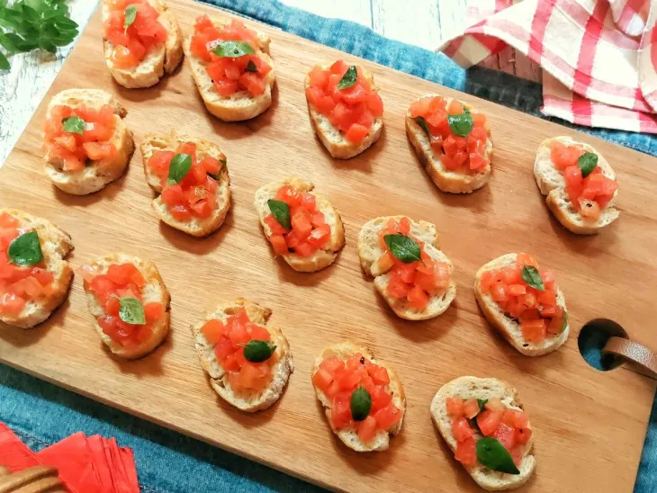
Carpaccio de salmão defumado
Entrada sofisticada feita com finas fatias de salmão defumado servidas frias.
R$ 60,90
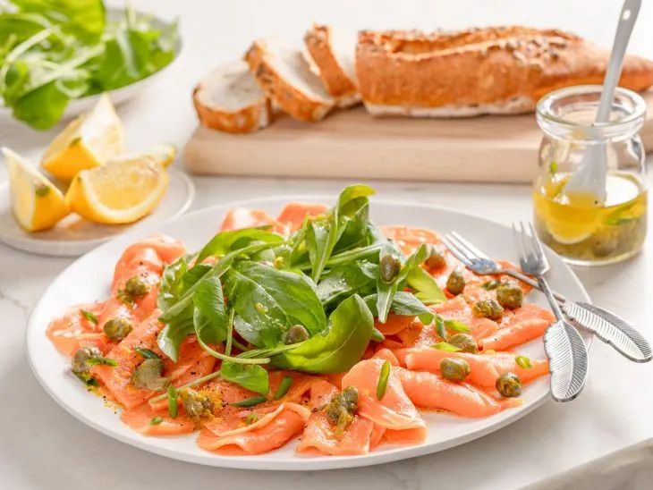
Guacamole
Molho tradicional mexicano feito à base de abacate amassado.
R$ 79,90

Principal
Paillard de filet
O Paillard de Filé é uma técnica culinária francesa em que um corte de carne é batido até se tornar um bife fino e macio.
R$ 60,00
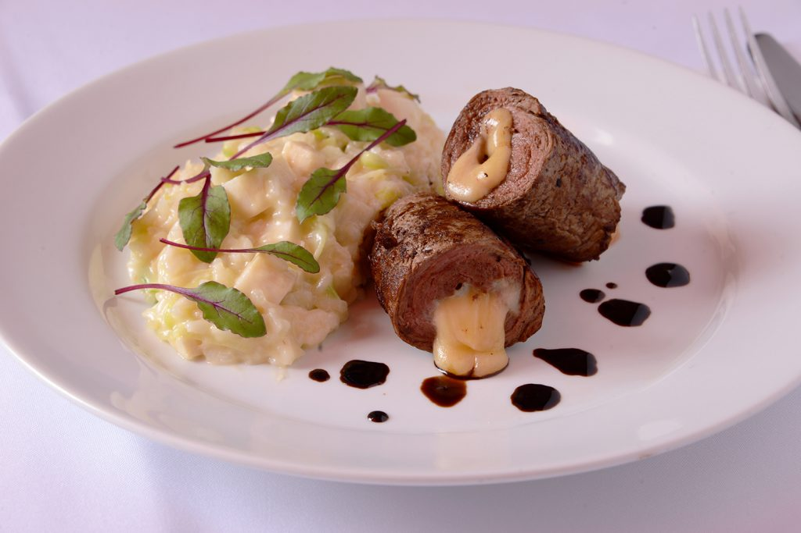
Risoto de cogumelos com ancho
Prato sofisticado que combina a cremosidade do risoto italiano com a suculência do bife ancho.
R$ 90,00
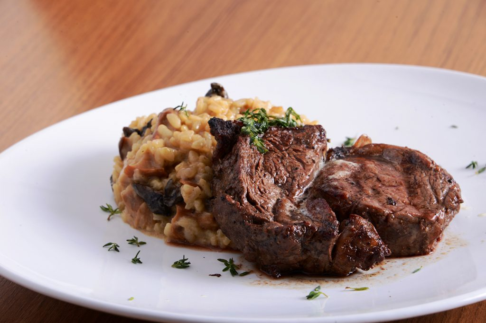
Salada
Salada proteica
Uma salada proteica é uma refeição completa que vai além das folhas: ela combina vegetais com uma grande fonte de proteína (animal ou vegetal) para virar o prato principal.
R$ 48,00
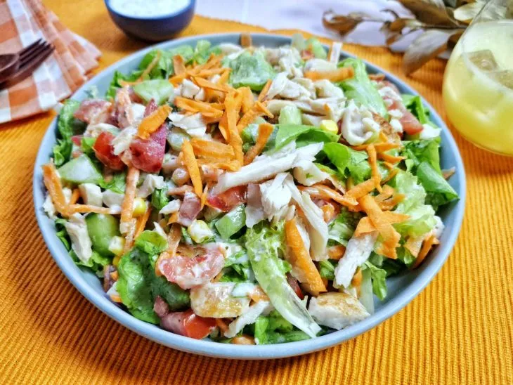
Salada de repolho com gergelim e shoyu
A salada de repolho com gergelim e shoyu, também conhecida como salada oriental ou Sunomono de Repolho.
R$ 25,00
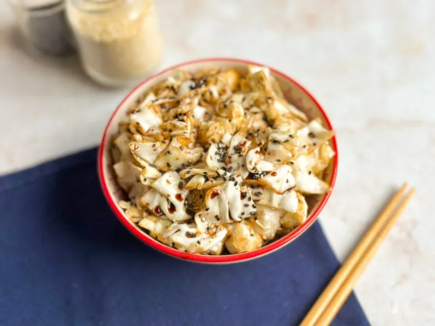
Bebidas
Aperol Spritz
Coquetel italiano refrescante com Aperol, Prosecco e água com gás.
R$ 45,00
Caipirinha
É uma bebida refrescante feita com a combinação de cachaça, limão, açúcar e gelo.
R$ 12,00
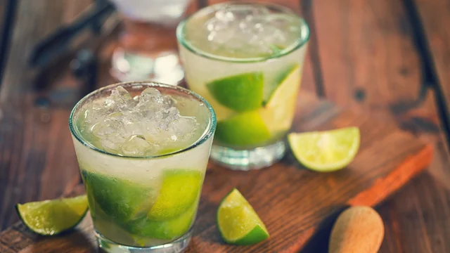
Massas
Ravioli
Massa italiana recheada com diversas opções de ingredientes e servida com molho.
R$ 65,00
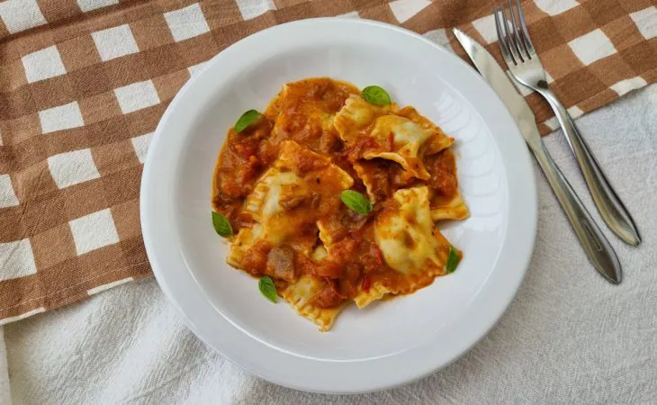
Macarrão ao molho branco
Massa servida com um molho cremoso preparado à base de leite, manteiga e queijo.
R$ 35,00
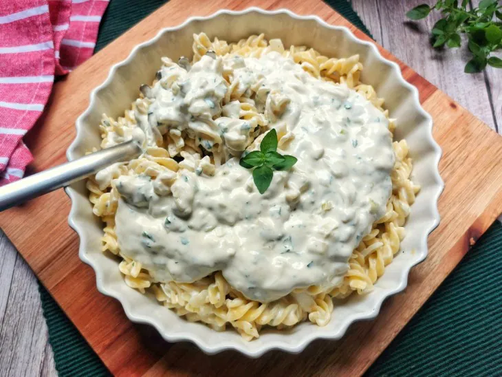
Sobremesas
Pudim de chocolate branco com frutas vermelhas
Sobremesa cremosa que combina o sabor suave do chocolate branco com frutas vermelhas.
R$ 35,00
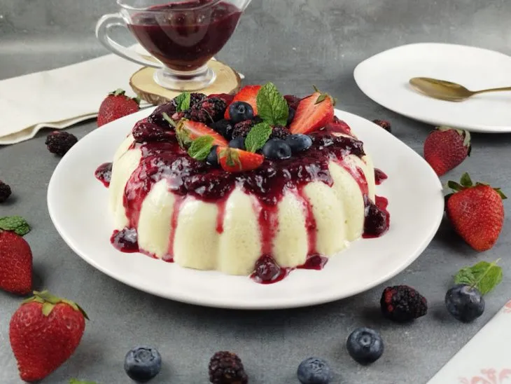
Cheesecake de morango
Sobremesa cremosa com base crocante e cobertura de morangos frescos.
R$ 25,00
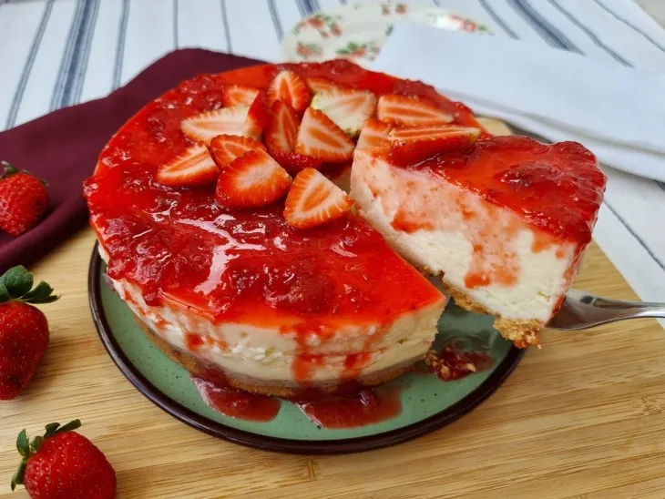